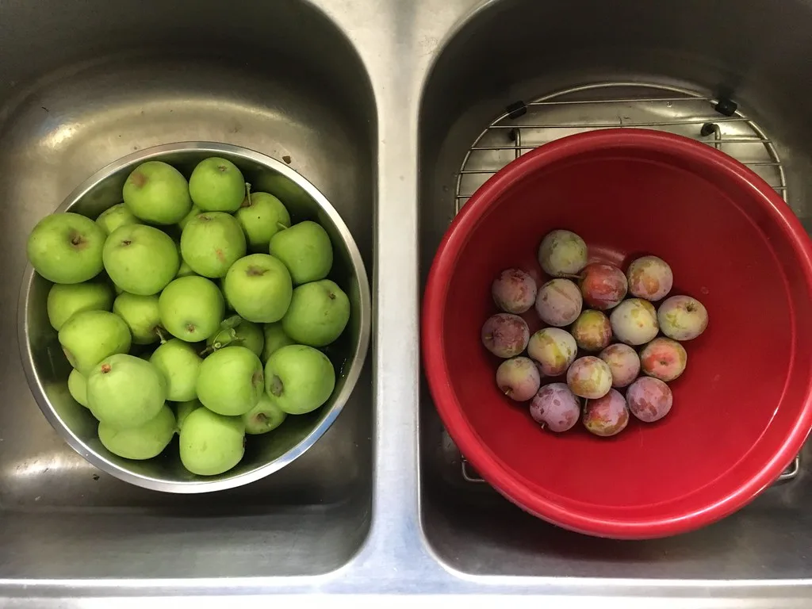
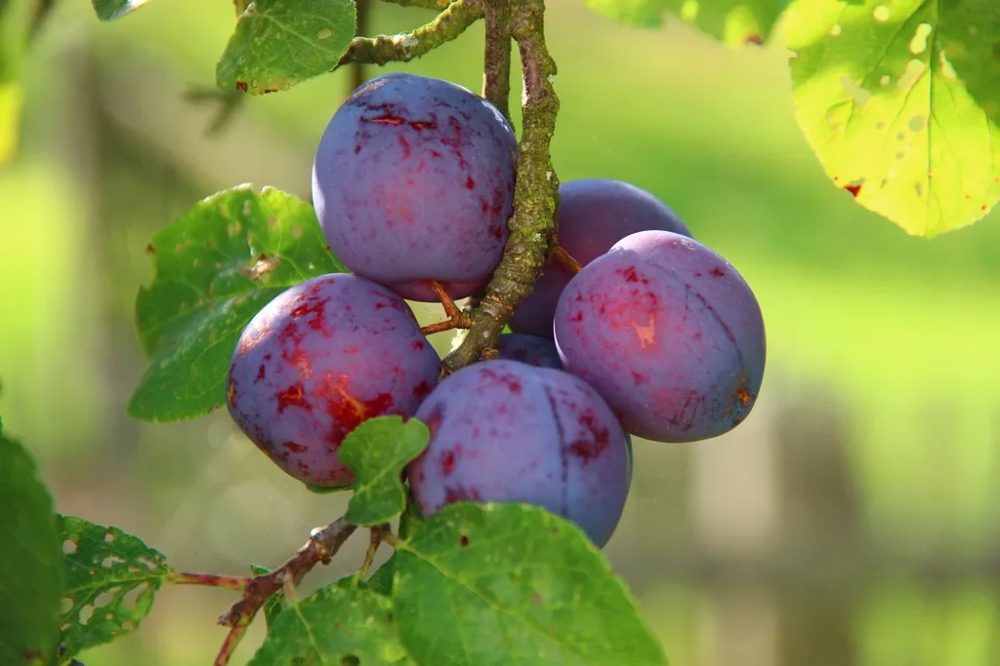
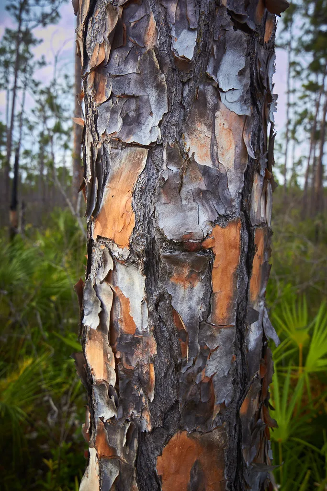
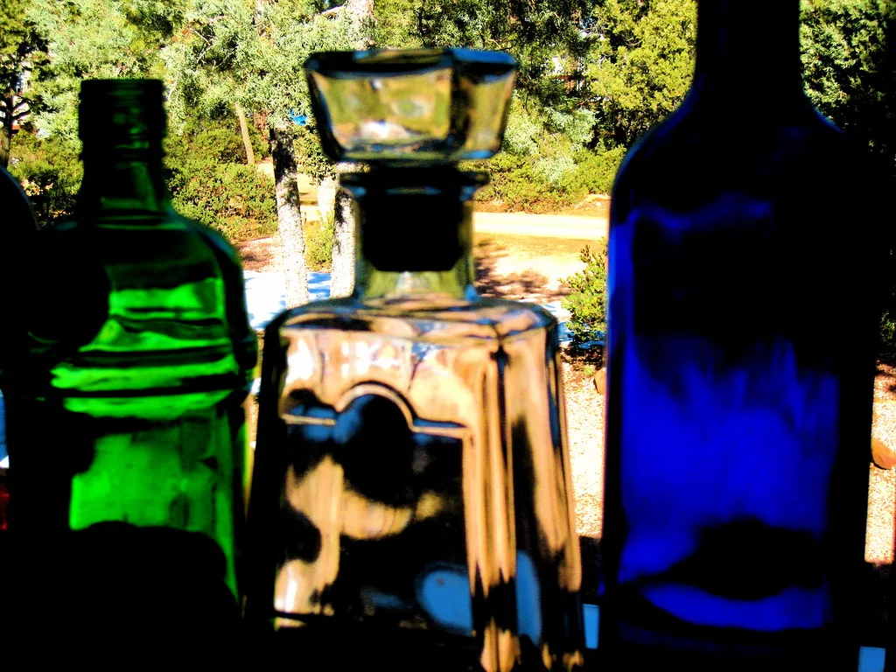

숫자로
9낸 향(누적)
214시제품 폐기
7한 향당 시향 개월
자주 쓰는 원료
올해의 여섯

운영중 탑 청자두 · 미들 제라늄 · 베이스 화이트머스크 아직 덜 익은 자두를 그대로 옮기려 했습니다. 자두 과육을 쓰면 금방 달아지고 흐려집니다. 껍질만 써서 떫은 기를 남겼습니다.시행착오: 초기 배합은 제라늄이 너무 세서 자두가 묻혔습니다. 제라늄을 절반으로 줄이고 나서야 순서가 잡혔습니다.
지속: 손목에서 5시간. 운영중 탑 갈바넘 · 미들 파인니들 · 베이스 발삼 비 온 다음 날 소나무 줄기에서 나는 냄새. 갈바넘은 온도에 예민해 여름 시제품과 겨울 시제품이 다르게 나왔습니다.
시행착오: 세 번 다시 잡았습니다. 마지막엔 발삼 비율을 계절별로 나눠 두 버전으로 냅니다.
지속: 손목에서 7시간. 완료 탑 베르가못 · 미들 아이리스 · 베이스 파피루스 종이와 먼지그리고 오래된 접착제. 먼지 냄새를 흉내 내려고 처음엔 흙 계열을 썼는데 축축해졌습니다. 마른 쪽으로 방향을 바꿨습니다.
시행착오: 아이리스 농도를 0.5%씩 다섯 번 바꿔 가며 시향했습니다.
지속: 손목에서 6시간. 완료 탑 알데하이드 · 미들 시더 · 베이스 베티버 여름 소나기 직후 도심 냄새. 알데하이드를 조금만 넘겨도 비누 냄새가 됩니다. 0.3% 단위로 조정했습니다.
시행착오: 첫 배치는 전부 버렸습니다. 비누 같다는 평이 여섯 명 중 다섯이었습니다.
지속: 손목에서 4시간. 완료 탑 정향 · 미들 마른 잎 · 베이스 통카빈 문 닫아 둔 창고를 오랜만에 열었을 때. 정향은 강해서 앞에 두면 다른 게 안 보입니다. 아주 적게 쓰고 통카빈으로 받쳤습니다.
시행착오: 마른 잎 노트를 직접 만들려다 실패해 결국 기성 아코드를 썼습니다.
지속: 손목에서 8시간. 보류 탑 알데하이드 · 미들 아이리스 · 베이스 머스크 눈이 오기 직전 공기가 멈춘 느낌. 차가운 느낌은 향료가 아니라 여백에서 나옵니다. 재료를 계속 뺐습니다.
시행착오: 아홉 개로 시작해 다섯 개까지 줄였습니다. 뺄수록 좋아졌습니다.
지속: 손목에서 5시간.

운영중 탑 자두 껍질 · 미들 제라늄 · 베이스 오크모스 01번을 3년 뒤에 다시 잡은 버전. 같은 원료인데 산지가 바뀌어 그대로 쓸 수 없었습니다. 비율을 처음부터 다시 짰습니다.시행착오: 옛 배합서를 그대로 따랐다가 두 배치를 버렸습니다. 원료는 해마다 다릅니다.
지속: 손목에서 6시간.

운영중 유리 100ml · 알루미늄 마개 쓰던 병을 가져오면 채워 드립니다. 병값을 빼 드리고 라벨도 다시 붙여 드립니다. 세척은 저희가 합니다.시행착오: 처음엔 아무 병이나 받았는데 향이 섞여 실패했습니다. 지금은 저희 병만 받습니다.
조건: 같은 향으로만 리필 가능합니다.

운영중 2ml × 6종 · 우편 발송 여섯 향을 다 맡아 보고 고르시라고 만들었습니다. 세트 가격은 나중에 본품을 사시면 그대로 빼 드립니다.시행착오: 처음엔 1ml로 보냈는데 하루를 지켜보기에 모자랐습니다. 2ml로 늘렸습니다.
발송: 주 2회, 화·금.
✕
탑 청자두 · 미들 제라늄 · 베이스 화이트머스크
아직 덜 익은 자두를 그대로 옮기려 했습니다.
8월에 딴 청자두를 그대로 옮기려다 세 번 실패했습니다. 결국 과육이 아니라 껍질의 떫은맛을 기준으로 잡았습니다. 30ml · 180병.
✕
탑 갈바넘 · 미들 파인니들 · 베이스 발삼
비 온 다음 날 소나무 줄기에서 나는 냄새.
송진 노트는 자칫 세제 냄새가 됩니다. 갈바넘을 0.4%까지만 쓰고 나머지는 흙 냄새로 눌렀습니다. 30ml · 150병.
✕
탑 베르가못 · 미들 아이리스 · 베이스 파피루스
종이와 먼지, 그리고 오래된 접착제.
실제 헌책 열 권을 밀폐 용기에 두고 한 달간 향을 포집해 분석했습니다. 30ml · 200병.
✕
탑 알데하이드 · 미들 시더 · 베이스 베티버
여름 소나기 직후 도심 냄새.
페트리코 어코드를 직접 조합했습니다. 흙보다 돌에 가깝게 맞추는 데 넉 달 걸렸습니다. 30ml · 160병.
✕
탑 정향 · 미들 마른 잎 · 베이스 통카빈
문 닫아 둔 창고를 오랜만에 열었을 때.
계피를 넣으면 즉시 크리스마스가 되어 버려서, 정향만 미량 남겼습니다. 30ml · 140병.
✕
탑 알데하이드 · 미들 아이리스 · 베이스 머스크
눈이 오기 직전 공기가 멈춘 느낌.
향이 거의 나지 않는 것이 목표였습니다. 여섯 번 농도를 낮췄습니다. 30ml · 120병.
만드는 방식
합성 향료를 피하지 않습니다. 천연만 쓰면 표현할 수 있는 범위가 절반으로 줄고, 계절마다 원료 품질이 달라져 같은 향을 두 번 만들 수 없습니다.
대신 배합표를 전부 공개합니다. 무엇이 몇 퍼센트 들었는지 상자 안쪽에 인쇄해 둡니다.
한 향에 평균 넉 달, 시제품 스무 번쯤 걸립니다. 그중 절반은 3주 뒤 다시 맡아 보고 버립니다.
병은 재사용합니다. 다 쓴 병을 가져오시면 20% 깎아 리필해 드립니다.
6올해의 향
4평균 제작 개월
30용량 (ml)
자두 껍질 · 송진 · 갈바넘 · 제라늄 · 발삼 · 시더우드·자두 껍질 · 송진 · 갈바넘 · 제라늄 · 발삼 · 시더우드·자두 껍질 · 송진 · 갈바넘 · 제라늄 · 발삼 · 시더우드·자두 껍질 · 송진 · 갈바넘 · 제라늄 · 발삼 · 시더우드·
올해의 여섯이 남아 있는 동안
다 팔리면 그 향은 그해로 끝납니다. 시향 신청은 상시 받습니다.
시향 신청
PLUM & PITCH
PP
Plum
& Pitch
플럼 앤 피치
Plum & Pitch
조향 · 향수 스튜디오